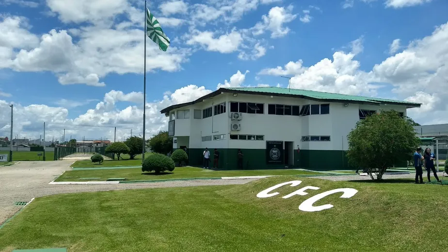

Coritiba

O “CT da Graciosa” foi inaugurado em 20 de dezembro de 1997 e recebeu o nome de “CT Bayard Osna”, em homenagem ao ex-presidente. Depois de muita dedicação e trabalho de todos que participaram deste projeto, o sonho se tornou realidade. Aos poucos, o CT passa por reformas em sua estrutura que visam ampliar e modernizar o patrimônio adversário.